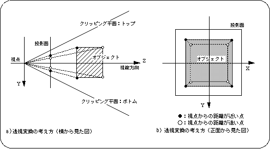
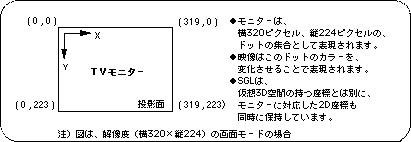

Return to previous page | Return to menu | Go to next page
Explains how coordinates appear on the screen and explains how to set the projection.
This section describes the perspective projection that is the basis for the transformation. The following figure shows the projection results when a viewpoint is set first and there is a cube placed perpendicular to the line of sight on the extension line of the viewpoint.

In perspective projection, an image is defined as a mapping to a plane called the projection plane. Think of the projection surface as a screen that displays shadows.
The object point is drawn at the intersection of the line connecting the viewpoint and the object point and the projection plane. By doing this for all points of an object in space, the space is only drawn on the projection plane.

In SGL, the projection plane is the TV monitor. The objects placed in the virtual 3D space are projected through perspective, then mapped onto the screen coordinate system and drawn on the TV monitor.